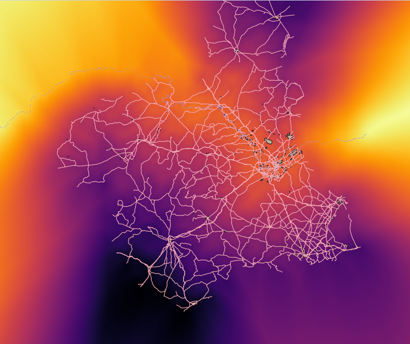
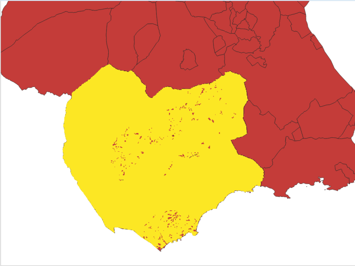
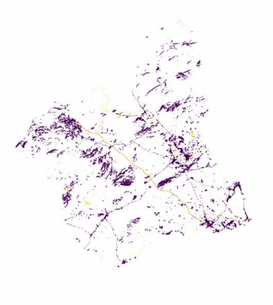
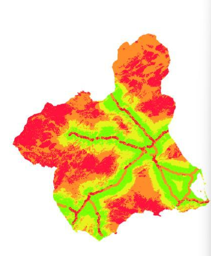
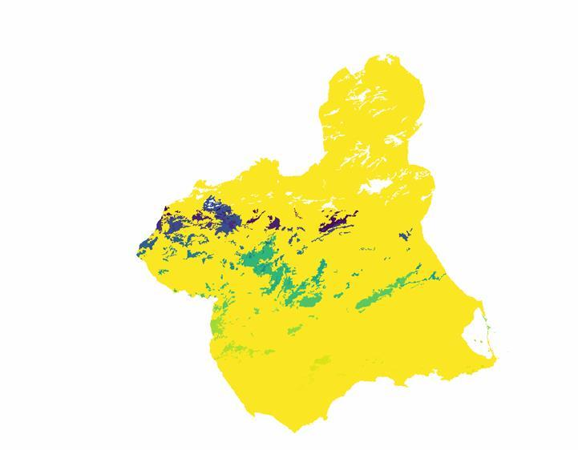
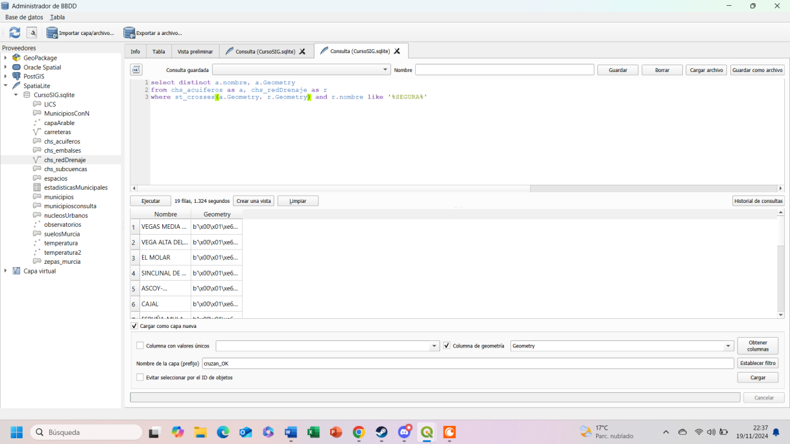
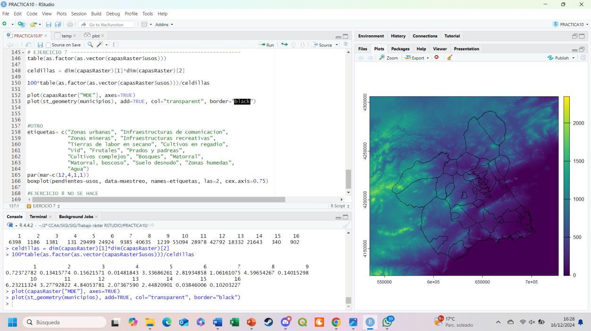
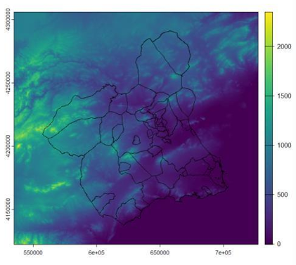

Renaturalising the Río Segura
A multi-criteria distance surface built to find stretches of the Segura river network suited for renaturalisation — far enough from urban núcleos and roads, on workable terrain.
Combines distance rasters from urban centres and the road network with slope, land use, and the river's own drainage layers to screen candidate zones.

Locating a Recreational Centre
A multi-layer suitability model developed to identify parcels for a recreational facility in Lorca, Bajo Guadalentín and Mazarrón.
It combines compatible land use, proximity to towns over 10,000 inhabitants, slopes below 15%, runoff below 20%, and a minimum site area of 50 hectares.

Least-cost Route between Caravaca and Cartagena
A route model that finds the lowest-cost path across the region by treating terrain and land cover as a continuous friction surface.
Land-use classes were reclassified by traversal cost and combined with slope; accumulated cost and movement direction were then used to derive the optimal corridor.

Multi-criteria Land Suitability Assessment
A continuous suitability index built to compare territory through slope, distance to urban areas and land-use conditions.
Criteria were weighted through an Analytic Hierarchy Process (AHP) and combined with TOPSIS in R to map the relative suitability of each location.

Forest Fragmentation & Connectivity
An analysis of forest fragmentation that identifies individual woodland patches and filters those larger than 500 hectares.
The work also models urban proximity and a terrain-cost route between Santomera and Mazarrón, linking patch structure with territorial connectivity.


Spatial SQL Queries
A set of database queries developed in QGIS DB Manager to filter, relate and create new geographic layers from municipal and environmental datasets.
Use the arrows or dots to switch between the SQL interface and the final selected layer.


Terrain Statistics in R
A reproducible RStudio workflow mapping the terrain raster with municipal boundaries and comparing slope distributions across land-use categories.
Use the arrows or dots to switch between the RStudio workflow and its final map output.
More maps on the way
Additional cartographic projects and spatial analyses will be added here as the portfolio develops.